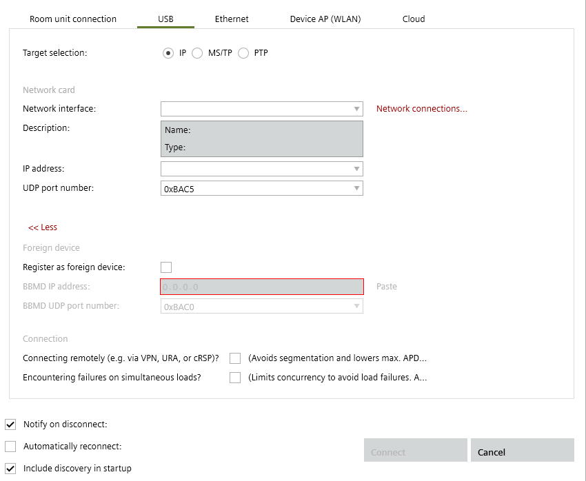

Connecting via USB port
The USB cable connects the commissioning laptop to the device.
Furthermore, the device establishes the additional connection to the IP or MS/TP network. If the connected device restarts (for example, during configuration, etc.), the connection between the commissioning laptop and the IP or MS/TP network is interrupted.
Connect the USB cable

A USB cable is available (type A plug on one end and type B on the other).
The USB driver RNDIS is installed (Windows 10 or later) or exists locally.
Older devices may still use the Siemens USB Remote NDIS Network device driver.
- Plug in the USB cable to the commissioning laptop and device.
- A new USB IP network connection is created.
- In the Common toolbar, select the arrow beside the Connect
 button.
button.
Connect and disconnect - Select the USB tab.
- Configure the connection.

- Select the device type: IP for DXR2.E../PXC..E.. devices or MS/TP for DXR2.M../TXB3.M devices or PTP for all DXR1.. devices.
- Click Connect.
- The connection is made to the Ethernet/IP network.
- Select Startup > Configure and download.
The device can now be discovered.